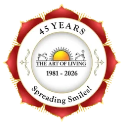
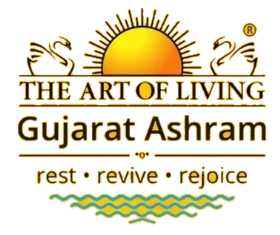
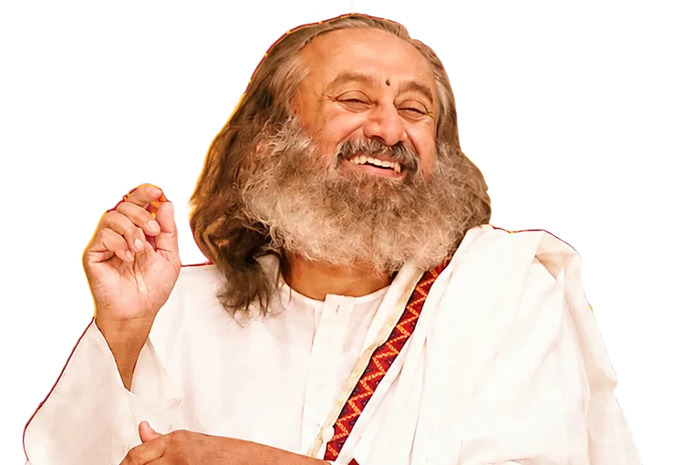

Viveka
विवेक
Discrimination
The ability to see what is changing and temporary, and what never changes: the Self.

Gyaan Ganga
Live knowledge talks with Gurudev Sri Sri Ravi Shankar during Guru Sanidhya at The Art of Living Gujarat Ashram, Vasad.
of seats taken · only left
Guru Sanidhya begins in

The Art of Living Gujarat Ashram, Vasad
Every soul, at some point, asks the same quiet question: why am I here, and what am I meant to know?
Knowledge from a book informs you. Wisdom heard from a living Master transforms you. In Gyaan Ganga, Gurudev opens a window into knowledge, not as facts to remember, but as a light that dissolves confusion, fear and restlessness.
Gurudev describes four foundations for walking the path of knowledge. Gyaan Ganga is your chance to hear them from the Master himself.
The ability to see what is changing and temporary, and what never changes: the Self.
Moving beyond the feverishness of desire into a broader vision of life, with the patience to follow your true passion.
Six inner treasures that make you steady and joyful:
The deep yearning for the ultimate truth, for freedom, for liberation. If you feel it, this is where it leads.
Not a recording. Gurudev, in front of you, in physical presence. A rare opportunity.
Bring the question you have carried for years. Hear the answer in real time.
Some knowledge can only be felt. You will understand what words alone never explained.
Thousands of seekers, one silence. The collective energy carries you deeper than you can go alone.
People come with burdens and go home lighter, clearer, more at peace.
Gurudev's year is spent travelling the world. Days with him in Gujarat are rare.
Close your eyes and picture it: diyas glowing across the ashram, bhajans rising into the night sky, Gurudev's laughter filling the air, and you, right there, in His presence.
If you have wisdom, you don't have to go through pain to learn. We go through pain because we lack wisdom.Gurudev Sri Sri Ravi Shankar
Gyaan Ganga is where that wisdom flows.
From seekers at Gurudev's Spiritual Sojourn in Bengaluru, August 2026.
“Gurudev's presence felt so light, yet his words touched something deep. I left lighter than I came.”
“I came with questions I'd carried for years. By the end of the session, they simply dissolved.”
“I've read so much about wisdom, but hearing it live from Gurudev took my understanding to a completely different level.”
You did not find this page by chance.
When the Guru calls, the seeker answers.
of seats taken · only left
Every seeker is welcome, whether you have followed Gurudev for decades or are coming for the very first time. If any program needs a prerequisite, the registration page will tell you.
It is "just the talk": knowledge sessions with Gurudev Sri Sri Ravi Shankar, live and in person, held during Guru Sanidhya week at the Gujarat Ashram.
Exact session timings are shared with registered seekers. Register early so you receive every update in time to plan your travel.
Available stay options and their fees are shown on the registration page. Diwali week is busy, so book early if you want to stay on campus.
Yes, this is a beautiful way to spend Diwali together. Each person attending should be registered.
The ashram is at Vasad, between Anand and Vadodara. The nearest airport and major railway station are in Vadodara. Tap "Open in Google Maps" above for directions.
Call or WhatsApp the help line: +91 79847 56819 or +91 98255 95475.
Take one small step today. Your seat at Gyaan Ganga is waiting.